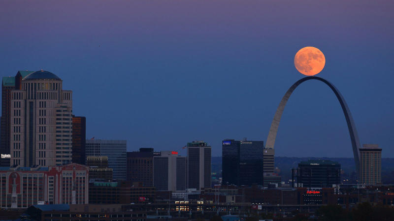

The moon is awesome, and if you love it as much as we do, then you've come to the right place! Lunaphiles St. Louis is the St. Louis chapter of the Lunaphiles organization. Join us to talk about the moon, lunar phases, landings, eclipses and everything in-between!
